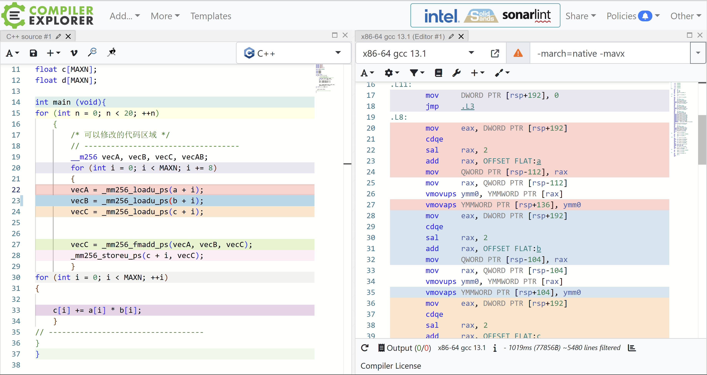

Lab-2 bonus#
Lab Description#
使用这些函数 API 需要 include 对应的头文件，不同 SIMD 指令集需要的头文件不同，具体需要参考 Intel 相关文档。
本次实验的实验目标：通过使用手写 SIMD 向量化的方式对这个循环进行优化
/* 可以修改的代码区域 */
// -----------------------------------
for (int i = 0; i < MAXN; ++i)
{
c[i] += a[i] * b[i];
}
// -----------------------------------
详情请看实验指导
Introduction Knowledge(可以跳过不看)#
SIMD#
单指令流多数据流（英语：Single Instruction Multiple Data，缩写：SIMD）是一种采用一个控制器来控制多个处理器，同时对一组数据（又称“数据向量”）中的每一个分别执行相同的操作从而实现空间上的并行性的技术。
在微处理器中，单指令流多数据流技术则是一个控制器控制多个平行的处理微元，例如Intel的MMX或SSE，以及AMD的3D Now!指令集。
图形处理器（GPU）拥有强大的并发处理能力和可编程流水线，面对单指令流多数据流时，运算能力远超传统CPU。OpenCL和CUDA分别是目前最广泛使用的开源和专利通用图形处理器（GPGPU）运算语言。
向量化指令#
现代处理器一般都支持向量化指令，x86 架构下 Intel 和 AMD 两家的处理器都提供了诸如 SSE，AVX 等 SIMD 指令集，一条指令可以同时操作多个数据进行运算，大大提高了现代处理器的数据吞吐量。
现代编译器在高优化等级下，具有自动向量化的功能，对于结构清晰，循环边界清晰的程序，编译器的自动向量化已经可以达到很优秀的程度了。然而，编译器的优化始终是保守的，很多情况下编译器无法完成使用 SIMD 指令进行向量化的工作，为了追求性能，高性能计算领域经常需要手写 SIMD 代码进行代码优化。
显然直接手写汇编指令过于困难，在 C 语言环境下，Intel 提供了一整套关于 SIMD 指令的函数封装接口和指令相关行为的参照手册，可以在参考资料中找到。
汇编语言#
汇编语言（英语：assembly language）[注 1][1]是任何一种用于电子计算机、微处理器、微控制器，或其他可编程器件的低级语言。在不同的设备中，汇编语言对应着不同的机器语言指令集。一种汇编语言专用于某种计算机系统结构，而不像许多高级语言，可以在不同系统平台之间移植。
使用汇编语言编写的源代码，然后通过相应的汇编程序将它们转换成可执行的机器代码。这一过程被称为汇编过程。
关于汇编：
Lab Design & Test Result#
Code Design#
My Code:
for (int n = 0; n < 20; ++n)
{
/* 可以修改的代码区域 */
// -----------------------------------
__m256 vecA, vecB, vecC, vecAB;
for (int i = 0; i < MAXN; i += 8)
{
vecA = _mm256_loadu_ps(a + i);
vecB = _mm256_loadu_ps(b + i);
vecC = _mm256_loadu_ps(c + i);
// vecAB = _mm256_mul_ps(vecA, vecB);
// vecC = _mm256_add_ps(vecAB, vecC);
vecC = _mm256_fmadd_ps(vecA, vecB, vecC);
_mm256_storeu_ps(c + i, vecC);
}
}
ps: 这段代码也没有考虑内存对齐问题，如果你的数据是对齐的，你当然可以使用
_mm256_load_ps和_mm256_store_ps来提高性能。
汇编比较#
SIMD的汇编#


普通的汇编#

源代码中普通表达式的汇编#
我们不难看到他的处理也已经有SIMD（如：vmovss、vaddss）等的优化了

实验结果#
ps:记得添加gcc的编译选项，否则可能不通过!

结论：最后的加速比将近2.
Discussion#
通过手写SIMD的分装函数实现汇编上的优化。在学习的过程中我还看到，现代编译器都十分智能，我们甚至可以通过例如像：GCC编译器：使用-O3选项启用所有优化，并使用-ftree-vectorize选项启用自动向量化。（如下图）当然有的时候可能因为分支复杂的原因无法进行优化，我们也可以添加编译指导语句例如：\#pragma omp parallel for reduction(+:sum) private(x)来提示编译器帮我们优化

实际自动优化的加速比已经非常接近手动优化的了：

此外，这些封装函数的底层实现还是改变汇编语言。这当然得益于现代计算机高速发展使得cpu上能实现更多的指令加速工作。向量化的思想以及这个函数的整体构造，其实跟我们在CUDA编程课上分配threads去完成加法工作一样十分相似。包括一些MPI的设计结构也是如此。通过向量化（亦或是封装统一处理的思想）来实现high performance！
最后的最后我想说的是：正如实验指导和上课讲过的那样：“深入到这个级别的优化已经开始需要考虑具体处理器的体系结构细节了，如某个架构下某条指令的实现延时和吞吐量是多少，处理器提供了多少向量寄存器，访存的对齐等等。这种时候编译器具体产生的汇编代码能比 C 语言代码提供更多的信息，你能了解到自己使用了多少寄存器，编译器是否生成了预期外的代码等等。但这一定是你最后再去考虑去通过SIMD优化代码”。
Created: 2023年7月10日 14:13:23